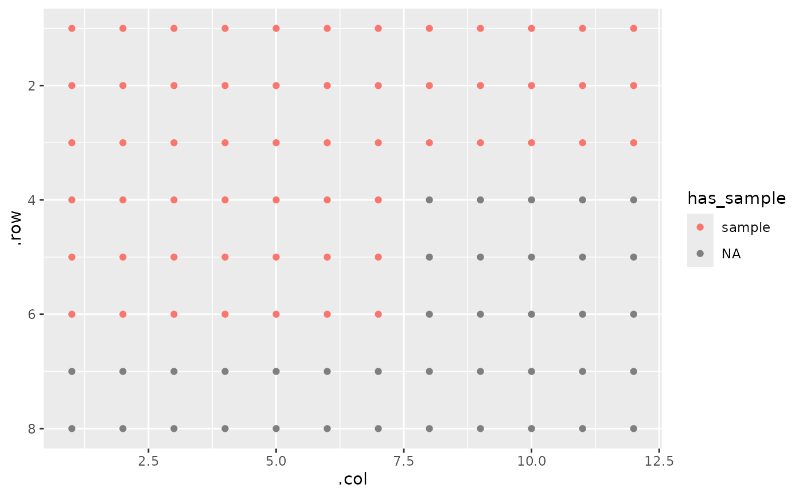

Add a section to a gp object.
gp_sec.RdAdd a section to a gp object.
Arguments
- gp
A
gpobject- name
Character. Name of the section.
- nrow
Numeric. Section height. If
NULL, will fill width of parent section.- ncol
Numeric. Section width. If
NULL, will fill width of parent section.- labels
Optional. What should the labels of each section be?
- start_corner
Corner of section to place first item.
- flow
Direction that subsequent items should be placed relative to first corner.
- margin
Border width outside the section that will be unfilled. Can take an argument of one (same border all around), two (top/bottom, left/right), three (top, left/right, bottom), or four (top, right, bottom, left).
- wrap
Should the sections that go off the edge continue on the next row/column?
- break_sections
Should partial sections be allowed?
- advance
Should this section be a child or sibling of the one before it? If TRUE (default), it will be a child.
Examples
gp(16, 24) |> gp_sec("section 1", ncol = 3)
#>
#> 3
#> ______
#> | ◯ ◯ ◯
#> | ◯ ◯ ◯
#> | ◯ ◯ ◯
#> | ◯ ◯ ◯
#> | ◯ ◯ ◯
#> | ◯ ◯ ◯
#> | ◯ ◯ ◯
#> | ◯ ◯ ◯
#> 16 | ◯ ◯ ◯
#> | ◯ ◯ ◯
#> | ◯ ◯ ◯
#> | ◯ ◯ ◯
#> | ◯ ◯ ◯
#> | ◯ ◯ ◯
#> | ◯ ◯ ◯
#> | ◯ ◯ ◯
#>
#>
#> Start corner: tl
#> Plate dimensions: 16 x 24
pq <- gp(8, 12, protein_quant) |> gp_sec("has_sample", 3, 19, wrap = TRUE, labels = "sample")
# Sections can be used to label things for tidying
pq |> gp_serve()
#> # A tibble: 96 × 4
#> .row .col value has_sample
#> <int> <int> <dbl> <fct>
#> 1 1 1 0.0691 sample
#> 2 1 2 0.0801 sample
#> 3 1 3 0.0978 sample
#> 4 1 4 0.121 sample
#> 5 1 5 0.173 sample
#> 6 1 6 0.240 sample
#> 7 1 7 0.381 sample
#> 8 1 8 0.240 sample
#> 9 1 9 0.259 sample
#> 10 1 10 0.252 sample
#> # ℹ 86 more rows
# They can also be used for plotting:
pq |> gp_plot(has_sample)
